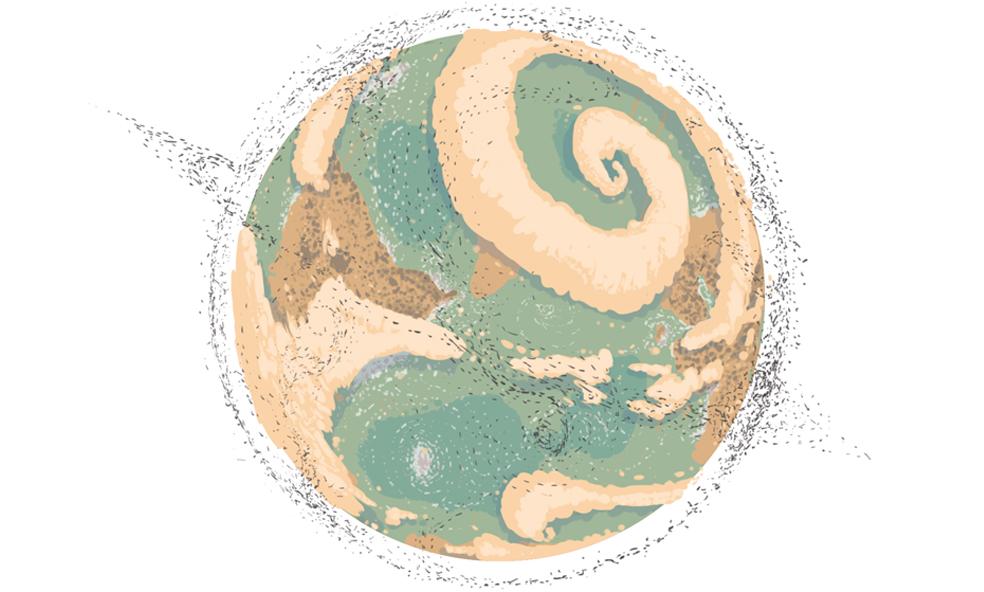
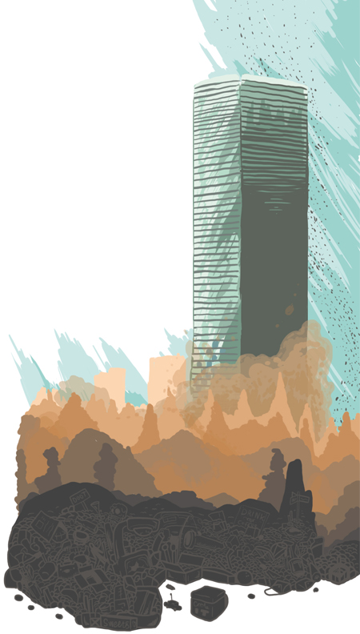

PixArt
Pixar ja animaatioiden kauneus
Pixarin animaatiostudio on tunnettu ympäri maailmaa. Heidän studionsa on unelmien työpaikka monelle animoijalle, käsikirjoittajalle, piirtäjälle ja muille alan artisteille. Heidän elokuvansa ja eritoten niiden tarinat ovat rakastettavia ja unohtumattomia. Pixarin elokuvien alussa esitellään aina sen maailma ja päähenkilö. Esittelyssä yhdistellään tarinankerrontaa, animointia, visuaalisuutta ja ääntä.
ESIMERKKIKOHTAUS
WALL-E elokuvan alussa kuljemme avaruuden läpi, Hello Dolly -kappaleen soidessa taustalla. Näemme paljon tähtiä, galaksin ja muutaman planeetan. Eteemme avautuu näkymä auringosta ja maapallosta. Maa on elottoman väritön ja sitä ympäröi suuri määrä avaruusromua. Romun ja pilvien takaa paljastuu usvainen maapallo, joka on täynnä jättimäisiä metalliromukasoja ja torneja.
Musiikin hiljentyessä kuulemme vain tyhjyyden ja tuulen ulinan, kunnes WALL-E kulkee romukasojen ympäröimää polkua pitkin musiikin saattelemana. Iloisen musiikin ja tuulen ulinan ylitse kuulemme hänen telaketjujensa äänen. WALL-E jatkaa matkaansa kunnes pysähtyy maassa lojuvien romujen viereen, asettaa kätensä niiden ympärille ja vetää ne sisäänsä. WALL-E puristaa romut samanlaiseksi kuutioksi, joista romutornit on pinottu. Puristaessaan romuja hän tärisee ja ponnistelee. Lopputuloksena on siisti romukuutio, jonka WALL-E ottaa käsiinsä ja kuljettaa romutornin huipulle. Huipulla hän kurottaa kuution omalle paikalleen.
WALL-E huomaa torakan kulkevan viereisen kuution ylitse. Hän kiinnittää katseensa kuutioon ja näkee sen sisällä pölykapselin. Hän siirtyy lähemmäs kuutiota ja pyrkii vetämään kapselin pois sen sisältä. WALL-E joutuu vetämään voimalla kaksin käsin ennenkuin saa kapselin irti. Silmäillessään kapselia hän huomaa laskevan auringon horisontissa. WALL-E laittaa kapselin talteen sisäänsä ja painaa stop -nappia pysäyttääkseen musiikin.
TARINA
Alun otokset tyhjästä avaruudesta, siirtyen galaksiin, siitä planeettoihin ja lopulta maahan, kertovat elokuvan maailman sijainnista. Tiedämme että elokuvamme tapahtumat sijoittuvat omaan galaksiimme, ja että se alkaa maapallolta. Metallijätteentäyteinen, likainen ja hylätty maapallo luo mielikuvan, että ihmiset ovat hylänneet maan, todennäköisesti liiaksi paisuneen jäteongelman takia. Suuret jätekasat ja tornit vahvistavat mielikuvaa entisestään likaisen ilman ja kasvittomuuden lisäksi. Jätekasojen välissä kulkevat polut kuitenkin vihjaavat että maassa olisi jotain eloa. Näkymät herättävät pelokkaita ja uteliaita tuntemuksia. Mitä maapallolle ja sen ihmisille on tapahtunut? Mikä voisi elää noin elottomalla maaperällä?
WALL-En tullessa kuvaan ensimmäisen kerran näemme hänet ylhäältä päin pienenä, romukasojen keskellä. Hänestä lähtevä musiikki luo hahmosta inhimillistä kuvaa. Kohtauksessa käytetyillä kuvakulmilla painotetaan ajatusta, että WALL-E on pienikokoinen robotti isossa maailmassa. Kun WALL-E pusertaa jätteet kuutioiksi, tiedämme hänen tehtävänsä ja työnsä. Torneilla ei näyttäisi olevan tarkkaa pinoamisjärjestystä, mikä kertoo WALL-En olevan huoleton, mutta tunnollinen.
Kun WALL-E kiinnostuu kapselista, näemme hänessä ensimmäisen kerran tunteita ja eleitä. Esine herättää hänessä niin voimakkaita tunteita, että hänen on saatava se itselleen. Auringonlaskuun hän reagoi pysäyttämällä musiikin. Eleellä viitataan hänen työpäivänsä loppumiseen. Hahmosta on nyt luotu katsojalle inhimillinen kuva. WALL-E kuuntelee musiikkia, noudattaa työaikoja ja tekee loputtomalta vaikuttavan työnsä tunnollisesti.
ANIMOINTI
Kohtauksen ensimmäisissä kuvissa on vain rauhallista liikettä avaruudessa, joka antaa elokuvan alulle rauhallisen tunnelman. WALL-En liikehtii sulavasti eikä heilu tai käyttäydy odottamattomasti. Hänen liikehdintänsä antaa olettaa, että kyseessä on robotti. Oletuksemme vahvistuu, kun näemme WALL-En lastaavan romua sisäänsä. Puristaessaan romua, hänen täytyy ponnistella ja käyttää voimiaan työn suorittamiseksi. Kuution kurottamisella paikalleen vihjataan, että hahmolla on ulottuvuutta sekä taitoa pienestä koostaan huolimatta.
Huomatessaan kapselin, WALL-En kulmakarvat nousevat ylös ja hän kääntelee päätään. Hän selvästi kiinnostui kapselista. Vetäessään kapselia irti, hän käyttää paljon voimaa. WALL-E todella tahtoo kapselin ja on valmis näkemään vaivaa saadakseen tahtomansa. Kun kapseli on vedetty irti kuutiosta, WALL-En silmät nähdään ensimmäistä kertaa. Silmien ja ”kulmakarvojen” liikehdintä on niin eloista, että ne muistuttavat ihmisen eleitä. Silmien liikkeellä ja eloisuudella luodaan hahmon syvin, robottimaisen inhimillinen ja ystävällinen olemus.
ÄÄNIMAAILMA
Alussa kuulemme vain iloisen Hello Dolly –kappaleen, jossa lauletaan maailmasta, joka on pienen paikkakunnan ulkopuolella. Sanoituksilla viitataan siihen, että maan ulkopuolella on muita maailmoja, joista hahmomme ei välttämättä ole tietoinen. Saapuessamme maan ilmakehään, kuulemme metallinpalasten viuhuvan ohi vauhdilla, kuljemme kovaa vauhtia kohti maata. Musiikin vaimetessa, kuulemme pelkästään hiljaisen ja vaimean tuulen ulinan. Hiljaisuudella painotetaan maapallon tyhjyyttä ja autiutta.
Musiikki voimistuu takaisin etäisenä WALL-En saapuessa kuvaan. Hahmosta luodaan inhimillistä kuvaa kertomalla, että hän kuuntelee musiikia. Huomio kiinnitetään hahmoon korostamalla hänen telaketjujensa ääni muiden äänien yli. Äänillä painotetaan myös hänen kulkusuuntaansa, musiikin ja telaketjujen äänien lähtöpiste on koko ajan WALL-Essa.
Merkittävintä elokuvan äänimaailmassa on kuitenkin WALL-En omat äänet. Hänen äänensä on tarkasti suunniteltu ja toteutettu. Liikkeiden äänet ovat pehmeitä ja lämpimiä sekä puheääni ja äänehdintä on ystävällistä ja inhimillistä. Äännähdyksillä samoillaan ihmisten ääntelyä. Näin robotista tehdään helposti samaistuttava ja lähestyttävä.
YHTEENVETO
Pääsyy Pixarin -elokuvien rakastettavuuteen ja korkeaan laatuun on tarina, tuettuna muilla osa-alueilla. Animoinnilla ja visualisoinnilla tuodaan syvyyttä hahmoon ja elokuvan maailmaan. Niiden avulla luodaan värit ja eloisa maailma, sekä tuetaan hahmojen luonnetta. Animoinnilla herätetään maailma eloon. Äänimaailmalla tehdään visuaalisesti luoduista maailmoista ja hahmoista uskottavia. Hahmojen luonteet tuodaan esiin heille tarkkaan suunnitelluilla äänillä ja maailmojen yksityiskohtia herätetään henkiin mitä pienimmillä äänillä, joita ei elokuvista välttämättä huomaa keskittymättä. Kun jokaisesta osa-alueesta tuodaan tarkasti suunnitellut yksityiskohdat yhteen, saadaan aikaan aitoa animaatioelokuvien taikuutta.